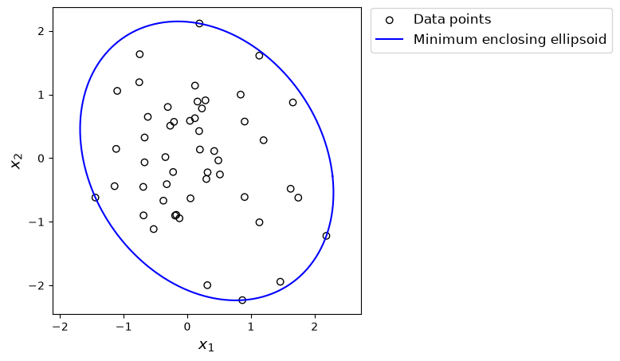

Minimal Enclosing Ellipsoid#
In this example, we consider a polytope given as the convex hull of \(m\) of data points,
The polytope is enclosed in the following ellipsoid
where \(\pmb{P}\) and \(\pmb{c}\) are the coefficients of the ellipsoid. According to MOSEK Modeling Cookbook, the minimum-volume enclosing ellipsoid can be achieved via solving the solving semidefinite programming problem.
The function \(\text{det}(\cdot)\) indicates the determinant of a given matrix, which is either convex or concave, but the logarithm of the determinant is concave, and maximizing \(\log(\text{det}(\pmb{P}))\) can be approximated by the following conic programming problem:
Therefore, the minimum-volume enclosing ellipsoid problem can be rewritten as follows.
In the following numerical experiments, the data points are randomly generated with \(n=2\) and \(m=50\) by the code segment below.
import numpy as np
n = 2
m = 50
np.random.seed(1)
xs = np.random.randn(m, n)
xs[:, 1] = xs[:, 0]*0.08 + xs[:, 1]
The Python code for implementing the model above is presented below.
from rsome import ro
import rsome as rso
model = ro.Model()
P = model.dvar((n, n))
c = model.dvar(n)
Z = rso.tril(model.dvar((n, n)))
v = model.dvar(n)
model.max(v.sum())
model.st(v <= rso.log(rso.diag(Z)))
model.st(rso.schur(P, Z, rso.diag(Z, fill=True)))
model.st(rso.norm(P@xs[i] - c) <= 1 for i in range(m))
model.st(P >> 0)
model.solve()
Being solved by Clarabel 0.11.1...
Solution status: Solved
Running time: 0.0018s
The boundary of the ellipsoid is achieved by the following code using the solution of \(\pmb{P}\) and \(\pmb{c}\).
Ps = P.get()
cs = c.get()
step = 0.01
t = np.arange(0, 2*np.pi+step, step)
y = np.vstack((np.cos(t), np.sin(t))).T
ellip = np.linalg.inv(Ps) @ (y + cs).T
Finally, the enclosing ellipsoid and randomly generated data points are shown below.
import matplotlib.pyplot as plt
plt.figure(figsize=(5, 5))
plt.scatter(xs[:, 0], xs[:, 1],
marker='o', facecolor='none', color='k', label='Data points')
plt.plot(ellip[0], ellip[1], color='b',
label='Minimum enclosing ellipsoid')
plt.legend(fontsize=12, bbox_to_anchor=(1.01, 1.02))
plt.axis('equal')
plt.xlabel(r'$x_1$', fontsize=14)
plt.ylabel(r'$x_2$', fontsize=14)
plt.show()
